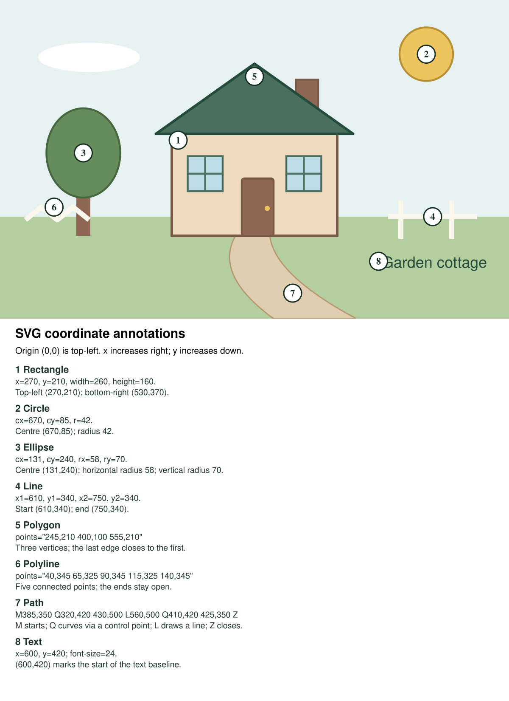

A cottage in the garden
Eight SVG element types build this scene. Both windows inherit the same fill and stroke from one group.
Annotated coordinates
SVG starts at (0, 0) in the top-left. x increases rightwards and y increases downwards. The window group begins at (295, 245); the second window adds a local translation of (155, 0).
